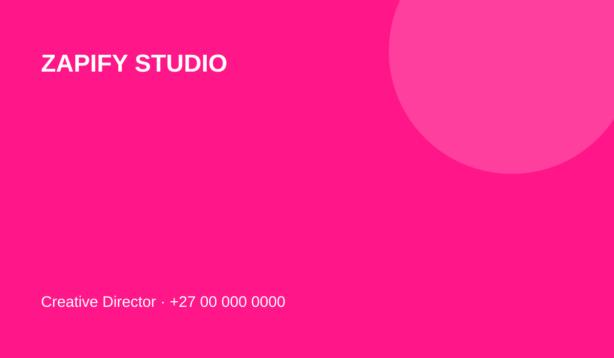
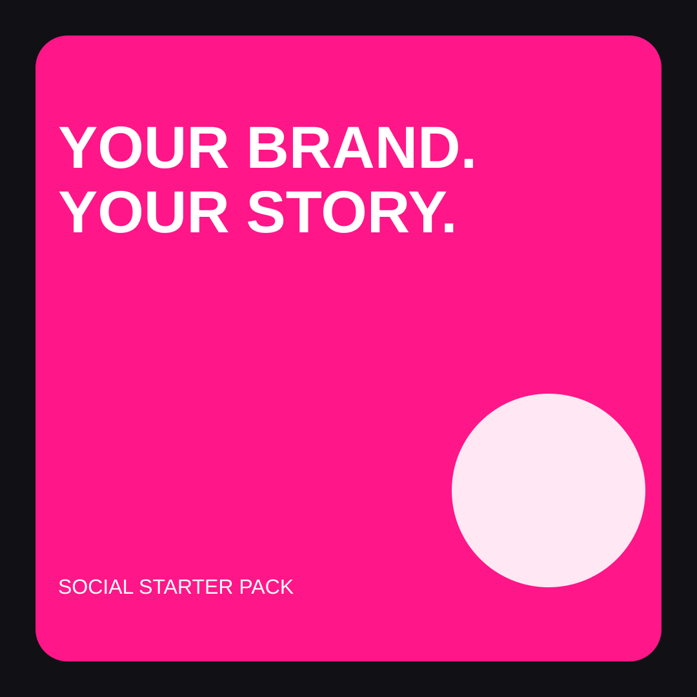
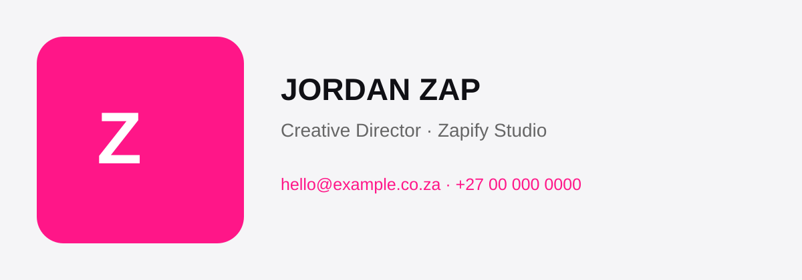

Starter Business Pack
- Logo
- Business card
- Email signature
- Social profile image
- Facebook cover
- 5 post templates
Business assets that can be delivered as a starter pack or customised around your brand.



These previews are actual SVG design files in the project. Production packs can be expanded with brand colours, editable source files and additional formats.